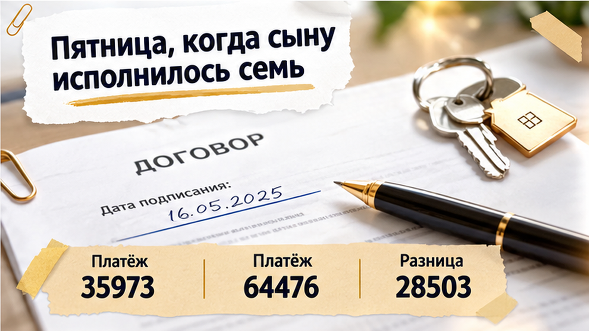
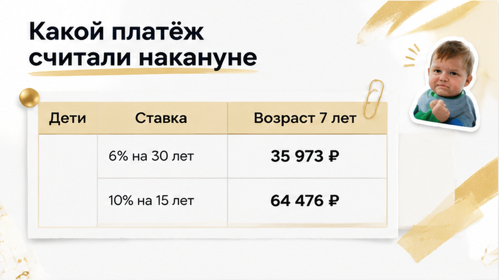
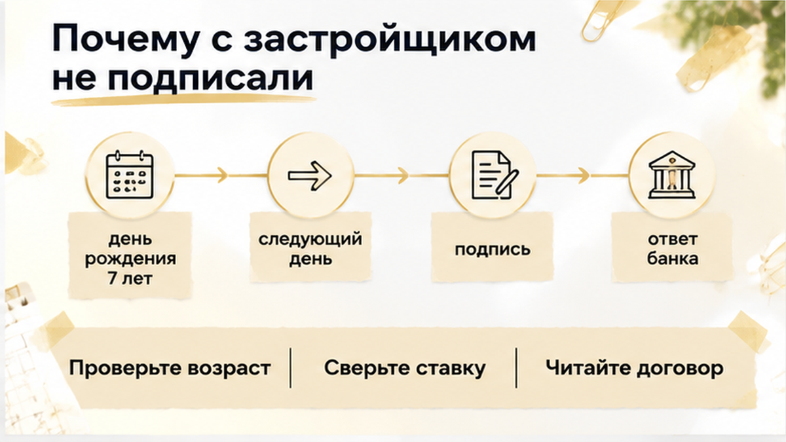
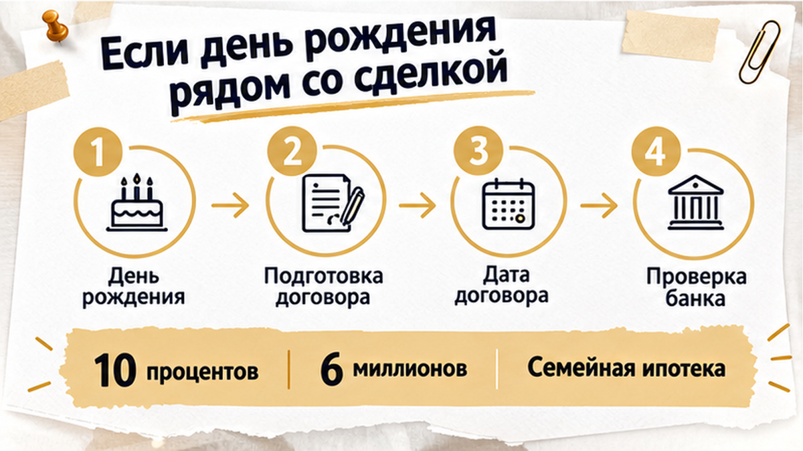

Сыну исполнилось 7 лет во второй день октября. Договор с застройщиком на квартиру в тюменской новостройке стоял на 3 октября, и из-за одних суток разницы семейная ипотека для этой семьи закрылась. Приветствую, я Святослав Шакин, личный риэлтор в Тюмени, и такие истории я разбираю до подписи договора с застройщиком, а не после. Банк смотрит возраст ребёнка не на дату заявки и не на дату одобрения, а на день, когда подписывают кредитный договор. Поэтому 3 октября ничего не подписали, и деньги на эскроу не ушли.

День выпал на пятницу. Для семьи это был праздник: день рождения сына, торт, гости. Для сделки это был день, когда сын перестал подходить под условия семейной ипотеки.
Со стороны всё выглядело спокойно: новостройка, понятная схема, банк на связи. Семья подписывает договор с застройщиком, банк выдаёт кредит, деньги уходят на эскроу.
«А что такое эскроу и при чём он тут?»
Это специальный счёт в банке. Деньги покупателя лежат на нём до сдачи дома, и застройщик получает их только после ввода. Счёт защищает покупателя, но к возрасту ребёнка отношения не имеет. Ипотека открывается отдельно, своим кредитным договором, и всё решает именно его дата.
Пока шла подготовка, день рождения со сроком подписи никто не сверил. В голове сидело: «Ребёнку шесть, программа наша». В сентябре так и было.
Обычный человек видит одобренную ипотеку и назначенную дату. Риэлтор спрашивает: сколько лет ребёнку будет в тот день, когда вы возьмёте ручку?
Правило короткое. На дату кредитного договора в семье должен быть хотя бы один ребёнок младше семи лет. Если день рождения наступил хотя бы за сутки до подписи, условие уже не выполнено.
«Ну хорошо, а договор с застройщиком почему не подписали? Кредит потом бы нашли».
Вот здесь и проходит черта. Без кредита семье нечем было бы пополнить эскроу. Подписать договор и потом искать деньги значило бы рисковать всем. Поэтому остановились раньше.
Теперь деталь, которую часто путают. Программа семейной ипотеки действует до 31 декабря 2030 года, но с 1 октября 2026 года для новых кредитов работают новые условия. Ставка зависит от количества детей, а лимит кредита в регионах растёт вместе с семьёй. Для Тюмени с одним ребёнком младше семи это 10% годовых и лимит 6 млн рублей. Субсидия ставки, то есть доплата государства банку за льготный процент, действует максимум 15 лет.
Главное из разговора с банком: одобрение, полученное раньше, право на программу не продлевает. «Почти успели» здесь не работает.
Если бы кредитный договор подписали 1 октября, семья попала бы под новую шкалу: 10%, кредит до 6 млн, льготный срок до 15 лет. Не идеально, но это была бы семейная ипотека.

Вернёмся на два дня назад. Если бы кредитный договор подписали 1 октября, сыну было бы ещё шесть, и семья попала бы под новую шкалу.
Для Тюмени и одного ребёнка младше семи лет это ставка 10%, лимит кредита 6 млн рублей, а государство доплачивает банку разницу в ставке максимум 15 лет. Эта доплата называется субсидией: она снижает процент, но действует не весь срок кредита.
«Хорошо, а сколько это в деньгах?»
Ориентир есть. 29 сентября 2026 года 72.ru опубликовал расчёт агентства «Этажи»: квартира за 8 млн рублей, первый взнос 2 млн, в кредит 6 млн. По старым условиям, 6% на 30 лет, платёж был 35 973 рубля в месяц. По новым, 10% на 15 лет, выходит 64 476 рублей. Это на 79% больше.
Обычный человек видит только ставку: было 6, стало 10. Я сразу смотрю на срок: 15 лет вместо 30. Тот же долг гасится вдвое быстрее.
Семья привыкла к цифре около 36 тысяч. Значит, до подписи нужно честно ответить себе: потянет ли бюджет почти 64,5 тысячи?
Но и этот дорогой вариант оставался льготным. Рыночная ставка по новостройкам на 25 сентября 2026 года, по данным Дом.РФ в «Ведомостях», была 18,74%. Вот что семья теряла с днём рождения сына: разницу между 10% и 18,74%.
«А может, у них ещё с сентября было одобрение под 6%?»
Нет, и на этом легко ошибиться. Старые 6% требовали ребёнка младше шести лет, а в сентябре сыну шесть уже исполнилось. Новая программа со шкалой от 10% до 2% действует для новых кредитов с 1 октября 2026 года и продлится до 31 декабря 2030 года. Окно у этой семьи было узким: с 1 октября до дня рождения. Два дня.

Банк смотрит возраст ребёнка на дату кредитного договора. Не на дату заявки и не на дату одобрения. Сыну исполнилось семь 2 октября, подписание стояло на 3 октября, и семейную ипотеку в этот день уже не открыли.
«Ну хорошо, кредита нет. Но договор с застройщиком-то можно было подписать?»
В новостройке договор с застройщиком и кредитный договор идут в связке. Банк даёт деньги под конкретную квартиру, застройщик ждёт оплату по договору. Нет кредита на семейных условиях, значит, нет и суммы, которой собирались платить. Поэтому договор 3 октября не подписали, и деньги на эскроу не ушли.
Эскроу — это специальный счёт в банке. Деньги покупателя лежат там до сдачи дома, застройщик получает их только после ввода объекта.
А теперь представьте другой вариант: договор подписан, кредит не выдан. Семья осталась бы с обязательством перед застройщиком и без денег на оплату. Здесь всё остановилось до первого перевода. И это правильная остановка.
По реквизитам счёта бывают и другие сбои, например чужое юрлицо в реквизитах эскроу. Но у этой семьи вопрос был только в дате.
«А если подписать по рыночной ставке и не терять квартиру?»
Подписать по 18,74% вместо льготных 10% — значит взять совсем другой кредит. Расчёт, на котором семья строила решение, перестал бы работать. Поэтому сделку остановили, а не довели любой ценой.
Одобрение на руках, семья выдыхает: «Банк же сказал "да". Что ещё проверять?» Обычный человек видит в одобрении сумму. Я смотрю в календарь.
Одобрение значит, что банк готов дать кредит. Но условия семейной ставки он проверяет на дату подписания кредитного договора, а не на день одобрения.
Вот что я прохожу с семьёй до подписи:
Последний пункт обычно пропускают: «Зачем считать плохой вариант, если у нас льгота?» Затем, что в этой истории плохой вариант наступил через одни сутки.
Кроме банка, до подписи читают договор с застройщиком. Например, что в нём написано про отделку: я уже разбирал, как чистовая в договоре и голые стены на приёмке расходятся. Ещё смотрят землю под домом в проектной декларации.
Перед отправкой денег на эскроу сверяют реквизиты счёта. После подписи такие ошибки уже исправляют, а не предотвращают.
Если дата договора рядом с днём рождения, напишите мне в Telegram или MAX. Посмотрим одобрение до подписи.

Правило одно: дату подписи ставят с запасом до седьмого дня рождения, а не впритык. Если застройщик или банк перенесёт подпись хотя бы на день, семья может потерять льготу. Подпиши эта семья 1 октября, ставка была бы 10%. После дня рождения остаётся только рыночная.
«А если до дня рождения меньше двух недель?» Тогда я делаю так:
Многие слышат «программа поменялась» и думают, что её больше нет. Это не так: она действует до 31 декабря 2030 года, с 1 октября 2026 года для новых кредитов поменялись только условия.
Чем всё закончилось у этой семьи? Они остановились до того, как отдали деньги. Договор с застройщиком не подписали, на эскроу ничего не ушло, никто не остался с кредитом, который не вытянуть.
Обидно? Да. Но вывод здесь не «не покупайте новостройку». Две вещи сверяют заранее: возраст ребёнка на дату кредитного договора и платёж. До подписи, а не после.
«Кто здесь ошибся: семья, которая не подписала договор до дня рождения сына, или банк, который смотрит возраст строго на дату договора?»
Если вы выбираете новостройку в Тюмени и планируете семейную ипотеку, напишите мне до подписи договора с застройщиком. Подключаюсь к сделке. Сверим даты, ставку и платёж. Пишите в Telegram или MAX, разборы читайте в Дзене и VK.
Пошаговые материалы — в разделе гайдов, остальное — на главной. Телефон: +7 922 001 65 05.